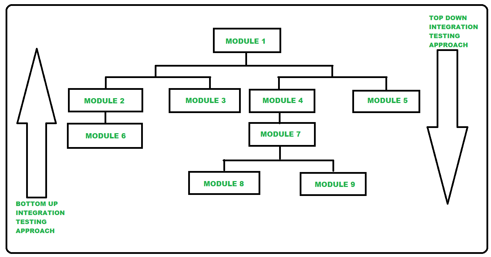

7.11–7.14 Testing Strategies
Testing strategies define how and in what order testing is applied across the §2.1 SDLC. They complement testing levels (§7.5–7.10) and techniques (§7.15 white box, §7.16–7.17 black box).
Functionality testing vs performance testing (7.11)
- Functionality testing verifies that the system performs the functions specified in requirements — inputs produce correct outputs and business rules are enforced.
- Performance testing evaluates how the system behaves under load — response time, throughput, resource usage, and scalability under stress.
- Functionality testing answers "Does it work correctly?"; performance testing answers "Does it work fast enough under expected load?"
- Both are essential before release — a functionally correct system that responds in 30 seconds may still fail non-functional requirements.
Functional vs non-functional testing (7.12)
| Dimension | Functional Testing | Non-Functional Testing |
|---|---|---|
| Question answered | What does the system do? | How well does the system perform? |
| Basis | Functional requirements in SRS | Quality attributes — performance, usability, security, reliability |
| Examples | Login, payment processing, report generation | Load testing, stress testing, usability testing, security scanning |
| Technique | Primarily black box (equivalence partitioning, use cases) | Specialised tools and benchmarks (JMeter, penetration testing) |
| When performed | Unit through acceptance levels | Primarily system and acceptance levels |
| Pass/fail criteria | Output matches expected result for given input | Meets measurable thresholds (e.g. response < 2 s, 99.9% uptime) |
- Functional testing confirms that specified features work; non-functional testing confirms quality attributes are satisfied.
- Non-functional requirements should be specified in the SRS so they can be tested objectively — see §8.3 V&V.
Top-down integration testing (7.13)
- Top-down integration testing begins with the highest-level (main) modules and progressively integrates lower-level submodules.
- It follows a big-to-small, structure-oriented approach aligned with the system's call hierarchy.
- Lower-level modules that are not yet developed are replaced by test stubs — temporary modules that simulate the missing submodule's behaviour.
- Stubs return predetermined responses so upper modules can be tested before their dependencies are complete.
- Top-down integration allows early verification of major control flows and user-visible features at the top of the hierarchy.
- It suits projects where the high-level architecture is stable and the main control logic must be validated early.

Bottom-up integration testing
- Bottom-up integration testing begins with the lowest-level modules and progressively integrates upward toward the main module.
- It follows a small-to-big approach and is commonly used in object-oriented and component-based development.
- Higher-level modules that are not yet developed are replaced by test drivers — temporary programs that call and pass data to lower-level submodules.
- Bottom-up integration ensures that foundational components work correctly before building on top of them.
- It is generally less expensive than top-down because stubs for every lower module are not needed — only drivers for the current integration level.
- Main module and global control flow are tested last, which can delay detection of architectural problems.
Test stubs and test drivers
- A test stub is a temporary module that simulates the behaviour of a submodule that has not yet been developed — used in top-down integration.
- A stub accepts calls from the module under test and returns canned (predetermined) responses without performing real processing.
- A test driver is a temporary main program that calls a submodule and passes test data to it — used in bottom-up integration.
- A driver simulates the calling module so lower-level components can be tested before the modules that invoke them are complete.
Top-down vs bottom-up integration — comparison
| Dimension | Top-Down Integration | Bottom-Up Integration |
|---|---|---|
| Starting point | Main / high-level module | Lowest-level leaf modules |
| Direction | Big to small — decompose downward | Small to big — compose upward |
| Orientation | Structure-oriented (call hierarchy) | Function-oriented / OOP component-based |
| Substitute needed | Test stubs for lower modules | Test drivers for higher modules |
| Early visibility | Major control flows tested early | Low-level utility functions tested early |
| Main module tested | First | Last |
| Stub/driver overhead | Many stubs required as lower modules are missing | Fewer drivers — one per integration step |
| Relative cost | More expensive due to stub development | Less expensive — fewer temporary modules |
| Architectural defect detection | Early — top-level design flaws found quickly | Late — main control flow tested last |
| Best suited for | Stable architecture; function-oriented design | Object-oriented systems; reusable components |
top_down_bottom_up.pseudo
// ── Top-Down Integration ──
PROCEDURE top_down_integration(system):
main_module = system.root_module
test(main_module WITH stubs_for_all_children)
FOR EACH level FROM top TO bottom:
FOR EACH module AT level:
replace_stub(module) WITH actual_implementation
test(parent_module WITH remaining_stubs)
END FOR
END FOR
END PROCEDURE
FUNCTION stub_for(module):
RETURN canned_response(module.expected_interface)
END FUNCTION
// ── Bottom-Up Integration ──
PROCEDURE bottom_up_integration(system):
leaf_modules = get_lowest_level_modules(system)
FOR EACH leaf IN leaf_modules:
driver = create_test_driver(leaf)
test(leaf WITH driver)
END FOR
FOR EACH level FROM bottom TO top:
combine_tested_modules_at_level(level)
driver = create_test_driver(combined_layer)
test(combined_layer WITH driver)
END FOR
test(full_system WITHOUT drivers_or_stubs)
END PROCEDURE
FUNCTION create_test_driver(module):
RETURN program_that_calls(module, passes_test_data, checks_output)
END FUNCTIONExam question — Testing Strategies
Q: Distinguish functional from non-functional testing. Explain top-down and bottom-up integration testing. Define test stubs and drivers. Compare top-down and bottom-up approaches.
Model answer points:
- Functional = what system does (requirements-based); non-functional = how well (performance, usability, security).
- Top-down: high-level first; stubs for lower modules; structure-oriented; big-to-small; main module tested first.
- Bottom-up: low-level first; drivers for higher modules; OOP/component-based; small-to-big; less expensive.
- Stub = simulates missing submodule (top-down); driver = simulates calling main module (bottom-up).
- Top-down finds architectural issues early but needs many stubs; bottom-up tests foundations first but delays main-module testing.
- Functionality vs performance: correct behaviour vs acceptable speed/load under stress.